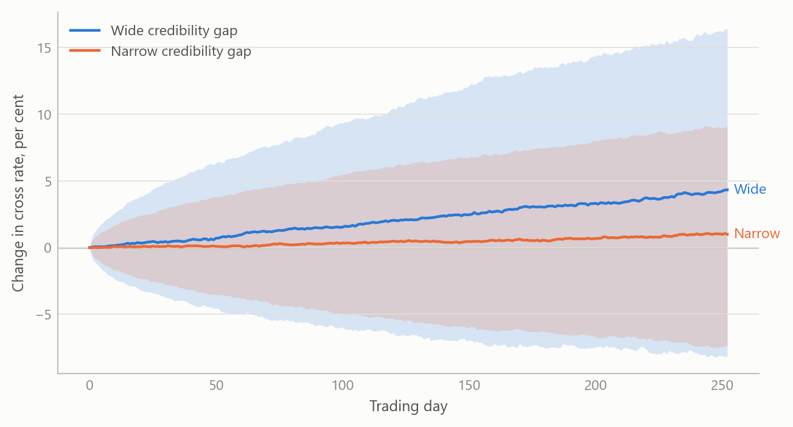
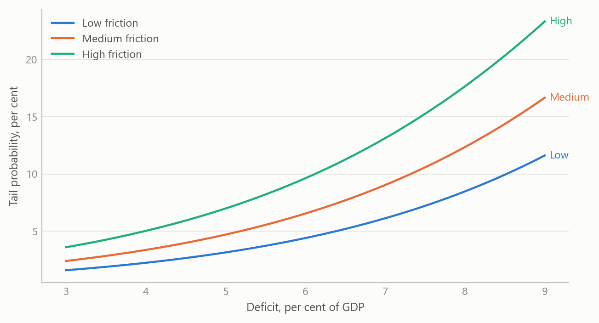

Currency divergence scenarios for central Europe
A quarterly-projection model extended with political-credibility and capital-flow risk terms, used to frame how neighbouring currencies could part ways
Macroeconomic models and scenarios
Scenario work on Poland and four other economies that adds a political-credibility term and a short-run capital-flow term to a standard small-open-economy model.
The question
Central European currencies are often treated as a bloc. They share an export base, an exposure to the euro area and a similar sensitivity to global risk appetite. Yet in 2025 and 2026 they did not move together, and the standard explanation, a gap in policy rates, accounts for only part of the difference.
The practical question was a scenario one. Given a set of neighbouring economies, which political and financial conditions would make one currency depreciate relative to another over the next twelve months, how likely is each path, and what would an investor or a policy analyst want to watch to know which path is under way? The obvious approach, a uncovered-interest-parity forecast with a fixed risk premium, treats the premium as a constant. That is the weakest assumption in the model, because the premium is exactly what moves when governance changes or when a leveraged holder of government bonds has to sell.
Approach
The base model. The starting point is the family of macroeconomic models studied earlier in the career break: the three-equation model of an IS curve, a Phillips curve and a policy rule, extended to a quarterly projection model for a small open economy. In that setting the exchange rate is pinned down by interest parity, with the expected change in the currency equal to the interest differential less a risk premium.
Two extensions. The risk premium is split into two parts that behave differently.
- A structural premium that depends on three political primitives: the credibility of the government’s commitments, the friction caused by veto players and divided institutions, and exogenous shocks, chiefly to the fiscal position. Credibility is scored on a zero-to-one scale; a high score shrinks the premium, a low score widens it.
- A tactical premium for short-run capital-flow risk. It rises with global risk aversion, with the share of illiquid assets held by non-bank financial institutions that may be forced to sell in a stress, and with the same political friction measure.
The policy rule and the Phillips curve also take the premiums as inputs, so a rise in either one feeds back into inflation and into the interest rate the central bank chooses. A fiscal block links the sovereign spread to debt, to fiscal shocks, to the shortfall in credibility and to the tactical premium.
From model to scenarios. The model is run forward by simulation rather than solved once. Drivers are drawn jointly, with heavy tails and positive dependence between global risk appetite, fiscal shocks and political friction, because those things tend to arrive together. In the worked case, a logistic link turns the drivers into the probability that the economy enters a tail regime, and in that regime sovereign yields jump by a large, uncertain amount while outside it they move modestly. Bond returns at several maturities follow from the yield shock and the duration, which gives expected outcomes, percentiles and tail-conditional losses rather than a point forecast.
Inputs and checks. The worked case, Poland against its regional peers, used a snapshot of late-2025 public market and fiscal data. The weights linking drivers to premiums are illustrative calibrations, chosen so that the tactical premium lands in a plausible range of basis points for typical inputs, and they are exposed as parameters rather than fixed. Where an input was missing, a timely proxy was substituted and the substitution recorded; official figures more than a month old were flagged as outdated.
What the work shows
A worked case. The Polish inputs combined a general-government deficit of 6.8 per cent of GDP, a high political-friction score reflecting a clash between the president and the government, and a ten-year yield of 5.184 per cent against 4.578 per cent for the Czech benchmark. The yield gap over the Czech benchmark is the observable that the model treats as a term premium to be explained. The inputs mattered less than the structure: they showed which drivers carried the weight. Fiscal shocks and tactical flow risk moved the tail probability; the political term moved the tactical premium and the structural premium together, so it counted twice, which is the intended behaviour but also the reason to treat its calibration with care.
A cross-rate exercise. A smaller simulation took two neighbours with different credibility scores and different policy rates and asked what a year of daily shocks does to the cross rate. The expected move is the interest gap plus the difference in structural premiums, and the simulated shocks spread the outcome around it. The exercise ended in three scenario-conditional views, each with a stated probability: a hedge against a sharp fall in one currency (60 per cent), a structural view favouring the better-governed currency over the other (75 per cent over twelve months), and a view that the bond curve would steepen as monetary easing met a large deficit (65 per cent). Those probabilities express the exercise’s judgement, not a tested forecast.
The figures below use simulated data built to share the structure of the analysis, and show the three things a reader would want to see.
The wide-gap case shifts the whole distribution and widens it, so the spread of outcomes is wider as well as the central path being different. That is the point of carrying a premium that responds to governance: the risk is in the spread of outcomes, not only in the average.

The curves accelerate as the deficit widens, and political friction lifts the whole curve. Because the link is non-linear, the same rise in friction adds more probability where the deficit is already large.
Two economies with the same total premium can have very different parts, and the parts imply different watch-lists: a mostly tactical premium can reverse within weeks, a mostly structural one will not.
Insights
- The risk premium is the model. Holding it constant is a decision to ignore the political and financial channels. Splitting it into a slow structural part and a fast tactical part lets the same model explain a gradual drift and a sudden break.
- Political terms count twice, on purpose. Friction raises both the structural and the tactical premium. That is realistic, since a standoff both worsens the long-run outlook and makes fast money leave, but it means results are sensitive to one parameter and should be shown with sensitivity ranges.
- Dependence matters more than any single driver. Global risk appetite, fiscal shocks and political friction arrive together, so independent draws understate the tail. Heavy-tailed joint draws are the cheaper fix.
- Scenarios beat point forecasts for decisions. A set of weighted paths, each with a named trigger, is something a user can monitor; a single number is not.
- Calibration should be visible. Illustrative weights are acceptable if they are exposed and labelled. The earlier version of the worked case overwrote the computed tactical premium with a sourced figure; removing that override kept the results driven by the inputs rather than by the answer expected.
Limits and next steps
The weights linking drivers to premiums are illustrative and were not estimated from a panel, so the scenario probabilities are structured judgements, not forecasts with a track record. The political scores are analyst-assigned and will differ between analysts. The simulation treats the yield shock in a tail regime as a single draw, with no dynamics after the shock. The model is not a full structural solution: the fiscal block is minimal and the political terms enter as additive premiums rather than inside a policy rule.
The next steps are the ones flagged for drill-down: show the calibrated outputs for all five economies, estimate the weights on a cross-section of economies, and test whether the credibility score adds predictive power for the exchange rate out of sample against a plain interest-parity benchmark.
About the evidence
The work was done between 2025 and 2026 on public macro, fiscal and market data for Poland and four other economies. The worked case rests on a late-2025 snapshot. The three figures are simulated, built to share the structure of the analysis (a twelve-month horizon at daily frequency, a logistic tail link, five economies); none shows a real estimate.
Figures and tables marked simulated are generated from simulated data built to share the structure of the analysis (its variables, horizons and frequencies). They show how the method works and what its output looks like; they are not the project’s results. Results stated in the text are the project’s own. Methods are described at the level of a methods section. Code and data pipelines are not reproduced here.